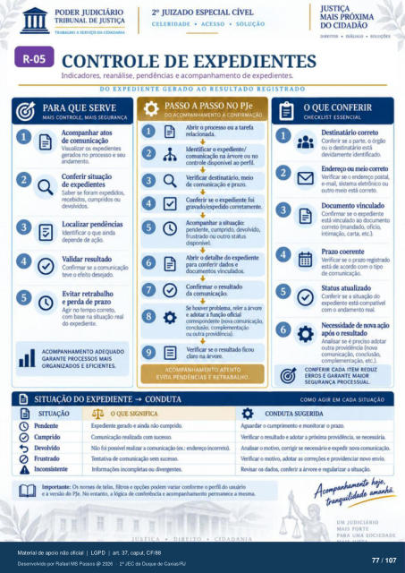

Transcrição automática em português, ainda não revisada. Confira grafia, prazos e termos jurídicos na imagem e no PDF antes de utilizar.
TRABALHO A SERVIÇO DA CIDADANIA
CELERIDADE • ACESSO • SOLUÇÃO
DIREITOS • D'ALtwo • SOLUÇÕES
CONTROLE DE EXPEDIENTES
Indicadores, reanálise, pendências e acompanhamento de expedientes.
DO EXPEDIENTE GERADO AO RESULTADO REGISTRADO
d PARA QUE SERVE
MAIS CONTROLE, MAIS SEGURANÇA
de comunicação Visualizar os
no prcxesso e seu Conferir situação
se foram exvSdos, recebidos, cumpridos ou
dgmde de Validar resultado
Confirmar se a teve o efeito &sejb.
Evitar retrabalho e Frda de prazo
Agir temm ccxreto. com base na real
e.xVMfente.
ACOMPANHAMENTO ADEQUADO
GARANTE MAIS
ORGANIZADOS E EFICIENTES.
e
PASSO A PASSO NO PJe
DC) ACOMPANHAMENTO À CONFIRMACÀO
Abrir o prtxesso ou a tarefa relacionada,
Identificar o expediente/ comunicação na árvore ou no
controle dispnivel ao Frfil. Verificar destinatário, meio
de comunicação e prazo. Conferir 0 foi
gravado/ex1Mlido corretamente. Acompnhar a situação:
VH1dente, cumprido. devolvido. frustrado ou outro status
dispnivel. Abrir o detalhe do
para conferir dados e dcxumentos
da comunicação. houver problema. reler a
e adotar a função oficial corresçnn&nte (rova
conclusão, complementação Ou mitra provi&wia).
Verificar se 0 resultado fictR1 claro na árvore.
ACOMPANHAMENTO ATENTO
EVITA PENDÊNCIAS E RETRABALHO.
SITUAÇÃO DO EXPEDIENTE -Y CONDUTA
O QUE CONFERIR
CHECKLIST ESSENCIAL
Destinatário correto Conferir se a parte. o ór*)
ou o destinatário está devidamente identifx"x
Endereço meio correto Verificar se o endereço postal,
e-mail, sistema eletrônico ou Outro meio correto.
vinculado Confirmar se o exgHSiente
está vinculado dcxurnento correto (mandado. oficia
intimação, carta, etc.). Prazo coerente
Verificar se o prazo registrú está acordo com o tim
de cornunicaçáo. atualizado
Conferir a situação do corn o arriarnento reaL
Necessidade rwva ação aÑs o resultado
Analisar se é preciso "*ar Outra providéncia (nova
conclus.h etc.).
CONFERIR CADA ITEM REDUZ
ERROS E GARANTE MAIOR
SEGURANÇA PROCESSUAL.
COMO AGIR EM CADA SITUAÇÃO
SITUAÇÃO
Pendente @ Cumpndo
Ikvolvido Frustrado
OQUE SIGNIFICA
ExF&nte geracb e ainda não cumpridQ Cotnunicaçü) realizxia com sucesso
rxssivel realizar a (ex.: irrcxreto). Tentativa de cornunkaçào sem sucesso.
incompletas divermtes.
CONDUTA SUGERIDA
AguardM 0 cumprirnento e nmitorar 0 0 resultado e a Vóxirna prwi&ncia, se necesária
Anahsu 0 motivo. corrigir se tEessárioe exl*dir nova o motivo, adc*ar as e providenciar envio.
Revisar dados. cmferir a árvore e regularizar a Situação. Imprtante•. Os nomes de telas. filtros e rxxlem variar conforme o 'Mfil do usuário
e a versão PJe. No entanto, a lógica de conferência e Kornpanhamento Frmanece a rnesma.
UM JUDICIÁRIO
MAIS FORTE
PARA UMA SOCIEDADE
Ver também o infográfico original (página 77)
